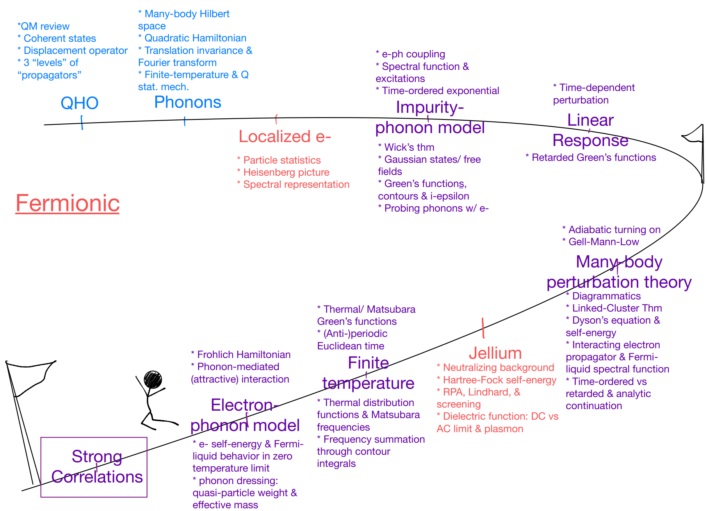
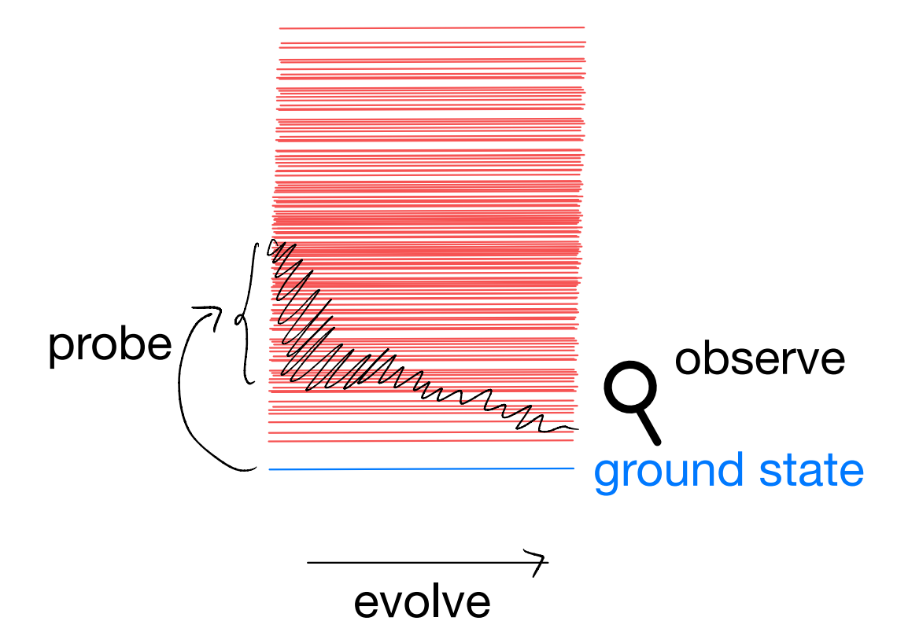
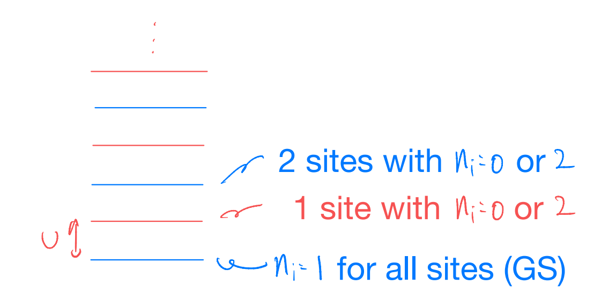
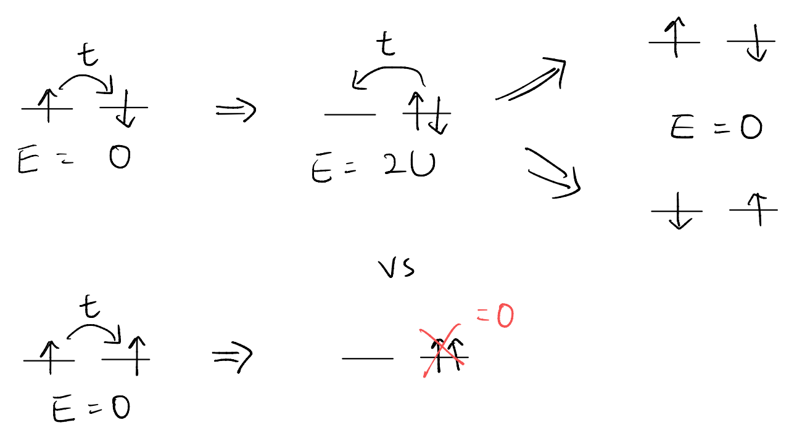
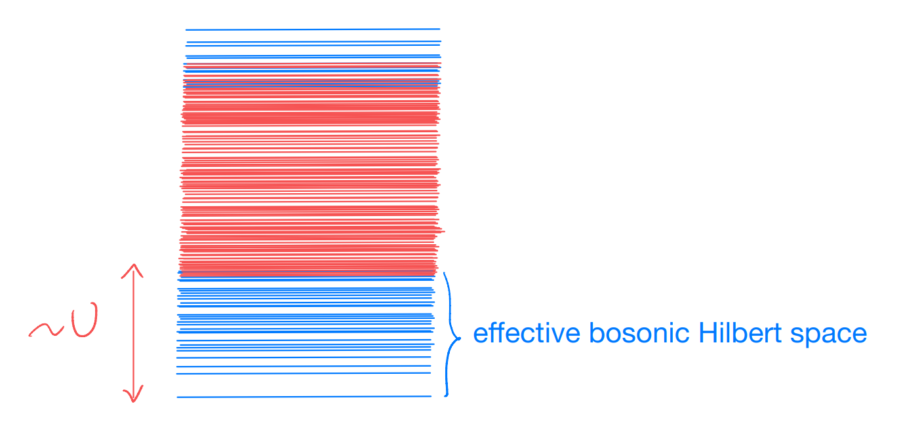
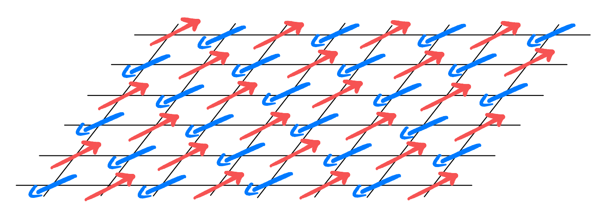
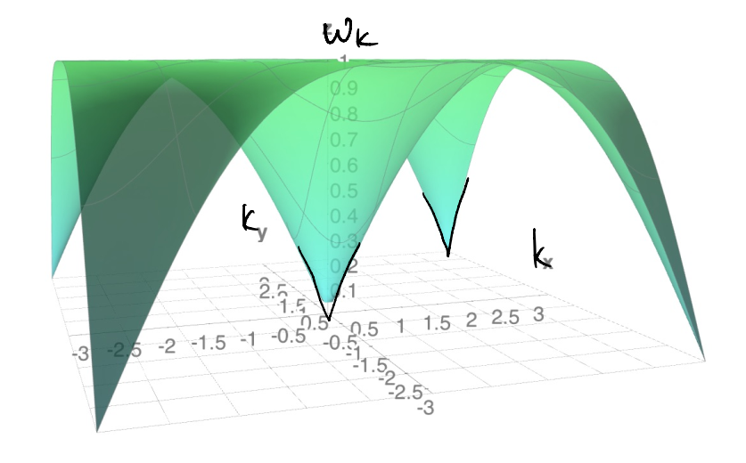
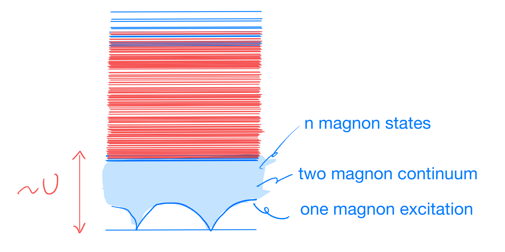

lec25
Contents
lec25¶
Note
This is NOT the official course PHYS5340 website yet!
If you are student in this course, always take the lecture notes as the correct one if you find any differences between lecture notes and website contents
If you are just passerby, use the materials below at your own risk. Since the website is still the first version (even alpha version), there could be some typos, incorrect/inaccurate/improper statements.
Note
All materials in this website are based on the course offered at HKUST
Note
As a “casual course”, we provide only general references but not specific ones to the materials introduced
Note
All materials’ copyright in this website are reserved for the course lecturer
If you want to use the material somewhere, you might need to contact the lecturer first
Note
Contribution is always welcome. if you find any typo, incorrect/inaccurate/improper statements or necessary references, do not hesitate to
raise an issue on github repo
make an pull request on github repo
contact me directly
20220506
Topics
Recap of the course so far
Intro to strongly correlated quantum many-body problems
Hubbard model and quantum magnets
Magnetic order and magnons
Goals
A taste of how interactions can change what we see from what we started with
Finally, we are in count-down model¶
For these last two lectures, let’s do something a bit different: for the previous classes we have tried to stay relatively “pedagogical”, in the sense that we tried to elaborate on every detail of the calculations (e.g., doing integrals, discussing how to take limits, crank through most of the steps etc.). The idea was that, alongside the discussion on the physical pictures, these lectures would hopefully provide you with a starting point for really learning how to do related calculations in quantum many-body theory (e.g., to complete the problems sets). For these last two lectures, however, let’s switch to a “topic course” style in which we will skip all the steps in calculations and instead try to highlight only the physics!
Let’s begin by recapping (again!) what we’ve covered

For this very last stretch of the course, let’s focus on strong-correlation problems! Of course, you can skip this if you prefer (it’s not like you can’t skip any of the parts before… This is a grad-school course, and you learn what you want :)
When are electrons electrons?¶
Quantum many-body problems are usually specified in two steps: first, we gather the actresses / actors; second, we give them a script. For instance, in the electron-phonon problem we first specify the degrees of freedom being a collection of electrons and phonons, and then describe their dynamics (both individually, and also their interplay) with a Hamiltonian.
In practice, however, one really only cares about the dynamics which is accessible on experimentally relevant time / energy scale. For instance, recall our “three levels” of reasons why the Green’s functions are physically significant: the ground state itself, in complete isolation, has no dynamics and so no physics. It is only when we “probe” the system that wee have anything interesting happening. Schematically, one can imagine drawing the many-body energy levels

In particular, our observation results depend on what we use to probe (e.g., one- vs two-particle Green’s functions), as well as how we measure (e.g., AC vs DC). In any case, we are mostly interested only in the low-energy degrees of freedom. So far in this course, we have assumed that these relevant degrees of freedom are well-described by the microscopic ones which enter into the Hamiltonian: the actors / actresses may be dressed but they retain their identities. That is, in fact, an implicit assumption of a perturbative treatment: by definition one cannot go too far from where we started (of course, one could also consider non-perturbative effects in the same framework).
The preceding discussion then suggests that we could have alternative scenarios in which the effective degrees of freedom do not need to resemble the microscopic ones. This, by definition, does not happen when the Hamiltonian is non-interacting. As such, this alternative scenario is usually referred to as “strongly correlated”. In the following we will attempt to take a quick tour on some of the possible physics happening in such problems.
Hubbard model¶
As the “standard” model for strongly correlated electrons, let us consider the single-band Hubbard model of the form
where the onsite number operator
takes values of \(0,1,2\). We take the interaction to be repulsive, i.e., \(U>0\). The spatial indices \(i,j\) usually correspond to sites on some lattices, and \(\langle i,j\rangle\) denotes some bonds (say nearest neighbors). For our purpose here, we will just keep them generic. (Note: it is more standard to include a chemical potential term which can be tuned to adjust the electron filling, i.e., average number of electrons per site. We have implicitly absorbed that into the interaction piece here.)
The strongly correlated limit is obtained when we consider \(t/U\ll 1\). In that limit, we can as well just start with \(t=0\). When \(t=0\), the Hamiltonian simply reads
and since the number operators commute \(\left[ \hat{n}_i,\hat{n}_j \right] =0\), the eigenstates of the Hamiltonian are specified by their eigenvalues \(|n_1,n_2,\cdots\rangle\), giving
The ground state is obtained by setting \(n_i=1,\forall i\), which has eigenenergy \(0\). The spectrum is then equally spaced at intervals of \(U\).

note that we have color-coded the fermion parity of the states, i.e., lines with same color represent states with the same number of electrons mod \(2\) (e.g., blue=even and red=odd). The fermion parity is an important aspect of a (many-body) fermionic problem, since the Hamiltonian is always bosonic and therefore conserves the number of fermions mod \(2\).
However, this \(t=0\) limit is deceivingly simple: on every site there are two states with \(n=1\): \(\hat{c}_{i\uparrow}^{\dagger}|0\rangle ,\hat{c}_{i\downarrow}^{\dagger}|0\rangle\). The interaction alone does not differentiate between these two states, and so far a system with \(V\) sites we actually have \(2^V\) ground states which are all at zero energy! Of course, this exact degeneracy is rather unphysical: we expect any perturbation to split it. The highly nontrivial question now is how the degeneracy is split.
To this end, let us turn on the electron hopping \(t\). In the limit \(t/U\ll 1\), we expect the lowest energy states to stay within the sector one electron per site. The effect of the kinetic energy parametrized by \(t\) can then be understood perturbatively. We claim its main effect is to factor anti-parallel alignment of neighboring electrons.
To see why, let us consider a simplified problem with only two sites. Let us contrast how the perturbation could affect two different initial states:

as such, while the energy of the anti-parallel arrangement could be lowered in second-order perturbation by \(O(t^2/U)\), the parallel-spin arrangement does not. Combining with the presence of the spin-rotation symmetry in our model, we see that the ground state of the system will be the spin singlet state \(\left( |\uparrow \downarrow \rangle -|\downarrow \uparrow \rangle \right) /\sqrt{2}\). (One may wonder what happens to the “even” combination: that is part of the spin triplet, and by symmetry has to be degenerate with the “parallel-spin” states. Consistently, one can verify that the second-order perturbation actually vanishes for the even combination.)
Extending the argument to a lattice, we expect the effective Hamiltonian to look like
where \(J\sim \frac{t^2}{U}>0\) is anti-ferromagnetic, in that it favors the spin-singlet configuration across nearest neighbors. Such spin-rotation invariant model is usually called the “Heisenberg model”. In terms of the electrons, the spin operators are given by
where \(\sigma^\alpha\) denotes the Pauli matrices. E.g.,
In particular, notice that these “spin operators” do not change the site occupancy, and so they manifestly stay within the ground-state sector defined by the \(U\to\infty\). Indeed, we have (dropping the site index)
implements a spin-flip for the electron on the site (and similarly for \(\hat{S}^y\)). Furthermore, and importantly,
And as such we can make the following conclusions concerning the “strong coupling” \(t/U\ll 1\) limit:
The relevant Hilbert space (defined by single occupancy on every site) is \(2^V\) dimensional, with \(V\) being the number of sites in the system
The effective operators (observables) are the spin operators, which are microscopically bilinears of the electrons on the same site
Operators localized to different sites simply commute, and this defines a (effective) bosonic Hilbert space
In other words, this gives one example in which the “relevant” states are bosonic in nature, although microscopically we start with the fermionic electrons!

Magnons: bosonic excitations from fermions¶
Let us now take the perspective that the relevant Hilbert space is that of the localized spin moments, and as such is bosonic. We call such systems “quantum magnets”. Given this setup, our next question would be to ask what is the ground state of the effective Hamiltonian, and, correspondingly, what are the low-energy excitations.
Generally speaking, predicting the ground state for an interacting, quantum many-body system is an extremely hard problem. In contrast, experiments can often give us a clear physical picture. As the name suggests, one possible outcome of a quantum magnet is the development of magnetism, i.e., the spin moments spontaneously pick an axis and point in that direction in the ground state. (There can be many varieties, for instance, maybe the system has some anisotropy to start with and prefer one direction over the two others, which leads to an Ising-like model; alternatively, maybe one direction is disfavored over the two others, which gives an “easy-plane” model. The magnetic ordering itself can also be very diverse. For instance, maybe all moments are pointing in the same direction leading to a ferromagnet. Alternatively, maybe they alternate and form an anti-ferromagnet. More exotic properties could involve spin textures which vary in space with some wavelength.)
To be concrete, let us suppose we have the following setup
A quantum magnet with one spin-half localized to each site on a 2D square lattice (e.g., one electron per site)
An anti-ferromagnetic ground state in which nearest neighbors point in opposite directions
Pictorially, the ground state can be pictured as follows:

Such ground state is usually called the Neel order. Supposing this is indeed the ground state, we can choose to pick the spin ordering direction as the “z axis” (which doesn’t need to be out-of-plane). Furthermore, it will be convenient for us to perform a “basis rotation” (i.e., unitary rotations) on half of the sites, say the blue ones, such that
(Recall the magnetic moments transform as a vector under SO(3) rotation. We see that the above can be achieved through a \(\pi\) rotation about the x-axis.)
The nearest-neighbor square lattice Heisenberg model can then be written as
where we have used the property that any “bond” is between a red site and a blue site. In this rotated basis, the anti-ferromagnetic order can be described as one in which all spins are points “up”!
Since the spin operators define a bosonic Hilbert space, it will be tempting to describe our local two-level system using canonical bosonic creation and annihilation operators. In particular, it will be natural to let the bosonic vacuum be our asserted ground state, i.e., the all-up state in the rotated basis. Indeed, using a bosonic occupancy basis we have
there is a big problem though: the bosonic occupancy goes off to infinity, and so the bosonic problem has an infinite dimensional Hilbert space. In contrast, the original spin-1/2 problem is a two level system! On way to go around this conceptual difficulty will be to impose a hardcore constraint, namely, we kick out all states in the bosonic Hilbert space with \(n_b>1\). This could be energetically enforced by adding a “constraint” in the effective Hamiltonian
and send \(\tilde{U} \to \infty\). Alternatively, one can consider a more proper transformation in which the \(n_b=0,1\) states are guaranteed to be decoupled from the \(n_b>1\) sector. This latter option is called the “Holstein-Primakoff” bosons (which works for general spin \(S\)); see, e.g., Auerbach for a discussion.
Setting aside he constraint, we might now rewrite the (rotated) Hamiltonian in terms of \(\hat{b}\& \hat{b}^\dagger\):
Introducing Fourier transform as usual
and in momentum space we have
Now, if our ground state was a good starting point, we expect \(n_b\sim 0\) to be small. That then suggests the interaction term \(\sim \hat{n}_{b,i}\hat{n}_{b,j}\) to be “doubly small” and so might be neglected. Similar argument applies to the hardcore constraint. (Admittedly, these are pretty hand-waving and are not truly justified. For a more careful treatment, see, e.g., Auerbach, for how the mean-field approximation can be justified in the large-S limit. Note that we have the smallest possible \(S\) of \(\frac{1}{2}\) in the present problem!)
We are then left with the quadratic Hamiltonian
which can be diagonalized by some Bogoliubov transform
with \(\theta_k\) real and even in \(k\). The Hamiltonian can then be diagonalized by choosing \(\theta_k\) such that the anomalous terms \(\hat{\alpha}_{k}^{\dagger}\hat{\alpha}_{-k}^{\dagger}\;\&\;\hat{\alpha}_k\hat{\alpha}_{-k}\) vanish. This gives the result
where
is the dispersion of the bosonic quasiparticle. Let’s try to plot it (the following by Math3D.org)

Notice that \(\omega_k\to 0\) linearly at both \(k=(0,0)\) and \(k=(\pi,\pi)\). These are the lowest energy excitations in our model (starting from the Neel order ground state). They are examples of Goldstone modes: low-energy excitations guaranteed by the spontaneous breaking of a continuous global symmetry. Note that these excitations are physically created by acting \(\hat{\alpha}_k^\dagger\) on the vacuum (i.e., the state annihilated by \(\hat{\alpha}_k|\Omega \rangle =0\))
Since
the excitation can be physically interpreted as the creation of spin flips on top of the ground state. Considering the quantum numbers
In other words, our lowest-energy excitations have integer spin! Also, the spin flip clearly carries no electric charge (recall, charged excitations are very costly in the \(U\to \infty\) limit). We call such collective excitations “magnons”, and our system is eventually described by

Notice that, starting with a model of electrons, we ended up with a system in which the lowest-energy excitations do not resemble the electron at all! (fermion vs boson, charge-e vs neutral, and spin-1/2 vs integer spin).